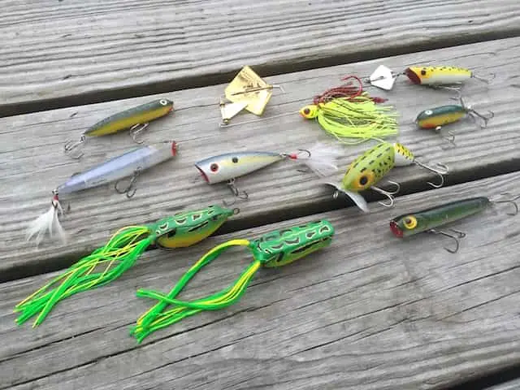

Topwater Lures
Fished on the surface, these lures imitate struggling prey and trigger explosive strikes. They work best at dawn, dusk, or on overcast days when fish are feeding near the surface. Great for Tucunaré and Traíra around structure.